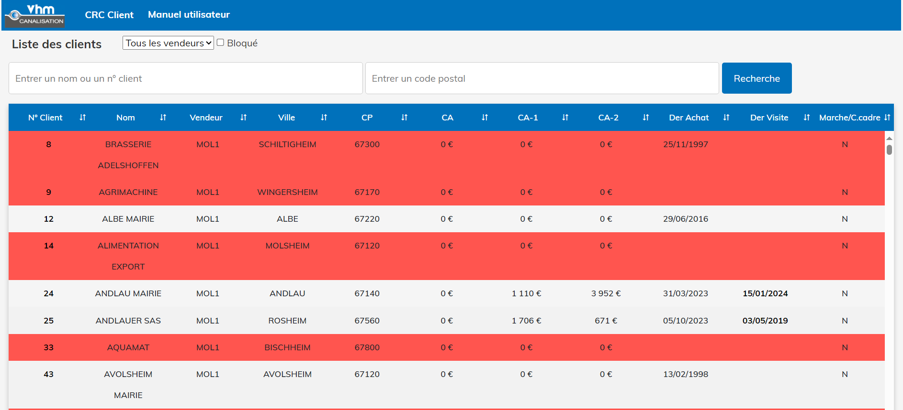

Stage chez VHM, Molsheim
📅 Durée : 15 janvier - 22 avril
Vhm Fonderie
Fabrication de pièces en fonte à l’unité ou en série
Vhm Mécanique
Usinage et mécano-soudure
Vhm Canalisation
Matériel d’adduction d’eau, assainissement, voirie et réseaux secs
Vhm Éclairage
Solutions et équipements d’éclairage public
Vhm Mobilier urbain
Solutions et équipements de mobilier urbain
Vhm Réalisations 3D
Impression 3D de pièces et outillages de production
Mon rôle
Mon rôle principal consistait à développer une application regroupant toutes les données clients sur une seule application, étant donné l'arrivée de tablettes pour les commerciaux du secteur de la canalisation.
Pour faciliter la récupération des données clients, j'ai conçu une API permettant d'accéder à ces informations. J'ai utilisé SQL Server pour créer les différentes tables nécessaires à mon application, notamment pour les comptes rendus clients.
Développement d'une application de visualisation clients
J'ai développé une application permettant aux utilisateurs de consulter une liste de clients avec divers filtres et de générer des rapports PDF personnalisés. Les fonctionnalités de filtrage incluent le tri par nom, chiffre d'affaires, date de dernier achat, etc.
Développement d'une application de géolocalisation des clients
J'ai mis au point une application pour présenter les clients de chaque agence sur une carte interactive. Les utilisateurs peuvent cliquer sur chaque point de la carte pour obtenir des informations détaillées sur les clients.
De plus, j'ai élaboré plusieurs tableaux de bord pour le siège de VHM utilisant Power BI, offrant une vue d'ensemble des performances de l'entreprise.
Compétences développées
- 🌐 Développement web : Utilisation de Visual Basic pour créer des interfaces utilisateur intuitives et manipulation des éléments HTML, CSS et JavaScript.
- 🔌 Intégration de bases de données : Utilisation de SQL Server pour gérer les données clients.
- 🎨 Design d'interface utilisateur : Création de PDF personnalisés selon les demandes spécifiques.
- 🔧 Résolution de problèmes : Analyse et résolution de problèmes techniques.
- 📚 Collaboration : Travail en équipe avec différentes personnes au sein du service informatique.
Application
Rapport de stage
Retour d'expérience
Ce stage m'a permis de développer mes compétences en développement web et en gestion de bases de données. J'ai appris à travailler en équipe et à communiquer efficacement avec mes collègues.
Je suis très reconnaissant envers VHM pour cette opportunité et je suis impatient de mettre en pratique les compétences que j'ai acquises lors de ce stage.
Compétence 4 : Administrer une base de données, concevoir et réaliser des systèmes d'informations décisionnels
Dans le cadre de mon stage, j'ai acquis des compétences solides en administration de bases de données et en conception de systèmes d'informations décisionnels :
- Administration de la Base de Données : Utilisation de SQL Server pour gérer et récupérer les différentes tables nécessaires à l'application. Maintenance et optimisation de la base de données pour assurer des performances optimales.
- Développement d'une API : Création d'une API RESTful pour récupérer les données de la base de données SQL Server. Mise en place de mécanismes pour permettre la visualisation des données via l'application.
- Mise à Jour des Statuts Clients : Développement d'un script bash pour synchroniser les données de l'ERP avec celles de la base de données. Utilisation de requêtes SQL pour mettre à jour les statuts des clients et intégrer les nouveaux clients non pris en compte par l'ERP.
Technologies Utilisées
- SQL Server
- API RESTful
- Bash scripting
Compétence 5 : Participer à la conception et à la mise en œuvre d'un projet système d'information
J'ai participé activement à la conception et à la mise en œuvre de projets de systèmes d'information. Un exemple notable est l'application de visualisation de données pour les commerciaux :
- Conception et Développement : Développement d'une application pour visualiser les données clients sur les tablettes des commerciaux en clientèle. Cette application génère des PDF cryptés pour mieux préparer les visites.
- Visualisation de Données : Intégration de Power BI pour visualiser les données sur une carte, permettant aux commerciaux de mieux comprendre les données géographiques et de performance.
Technologies Utilisées
- Power BI
- Visual Basic
Compétence 6 : Manager une équipe informatique
Lors de mon Stage, j'ai eu l'opportunité de manager des équipes informatiques, ce qui m'a permis de développer mes compétences en gestion de projet :
- Travail avec le service informatique : Travail avec les différents développeurs, la designeuse, l'équipe de cybersécurité pour assurer l'avancée de mon projet.
Application utilisée
- Plateformes de collaboration (Microsoft Teams)